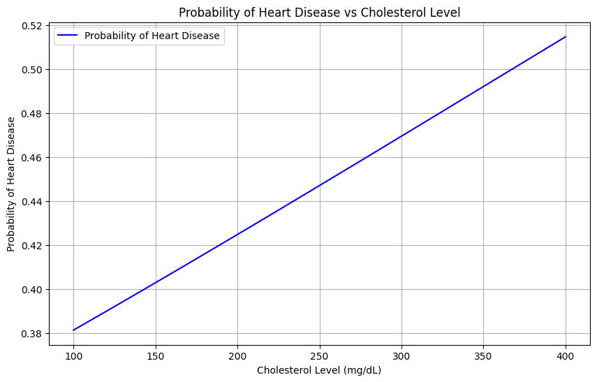

import pandas as pd
from sklearn.pipeline import Pipeline
from sklearn.neighbors import KNeighborsClassifier
from sklearn.tree import DecisionTreeClassifier
from sklearn.linear_model import LogisticRegression
from palmerpenguins import load_penguins
import numpy as np
from sklearn.pipeline import Pipeline
from sklearn.compose import make_column_selector, ColumnTransformer
from sklearn.preprocessing import StandardScaler, OneHotEncoder, PolynomialFeatures
from sklearn.compose import ColumnTransformer
from sklearn.impute import SimpleImputer
from sklearn.preprocessing import StandardScaler, OneHotEncoder
from sklearn.linear_model import LinearRegression, LogisticRegression
from sklearn.model_selection import train_test_split
from sklearn.pipeline import Pipeline
from sklearn.metrics import mean_squared_error
import warnings
from sklearn.neighbors import KNeighborsRegressor
from sklearn.tree import DecisionTreeRegressor
from sklearn.metrics import accuracy_score
from sklearn.pipeline import Pipeline
from sklearn.neighbors import KNeighborsClassifier
from sklearn.tree import DecisionTreeClassifier
from sklearn.linear_model import LogisticRegressionThe Data
At this link, you will find a dataset containing information about heart disease patients: https://www.dropbox.com/scl/fi/0vrpdnq5asmeulc4gd50y/ha_1.csv?rlkey=ciisalceotl77ffqhqe3kujzv&dl=1
A description of the original dataset can be found here: https://archive.ics.uci.edu/dataset/45/heart+disease (However, this dataset has been cleaned and reduced, and the people have been given fictious names.)
hd = pd.read_csv("https://www.dropbox.com/scl/fi/0vrpdnq5asmeulc4gd50y/ha_1.csv?rlkey=ciisalceotl77ffqhqe3kujzv&dl=1"
)X = hd.drop("diagnosis", axis = 1)
y= hd["diagnosis"]X = hd[["age", "chol"]]
y = hd["diagnosis"]1. Logistic Regression
Fit a Logistic Regression using only age and chol (cholesterol) as predictors.
For a 55 year old, how high would their cholesterol need to be for the doctors to predict heart disease is present?
How high for the doctors to estimate a 90% chance that heart disease is present?
import matplotlib.pyplot as plt
# Define the preprocessing step for "age" and "chol"
ct_dummies = ColumnTransformer(
[("standardize", StandardScaler(), ["age", "chol"])], # Specify only the variables to transform
remainder="drop" # Keep all other columns as they are
)
# Create the pipeline
lg_pipeline = Pipeline(
[("preprocessing", ct_dummies),
("logistic_regression", LogisticRegression())]
)
# Fit the pipeline using the entire dataset (X and y)
lg_pipeline.fit(X, y)
# Extract the logistic regression model and the scaler
logistic_model = lg_pipeline.named_steps["logistic_regression"]
scaler = lg_pipeline.named_steps["preprocessing"]
# Step 2: Standardize age = 55 and cholesterol values
age = 55
chol_values = np.linspace(100, 400, 300, 564) # Range of cholesterol values
X_input = np.column_stack([np.full(len(chol_values), age), chol_values])
X_input = pd.DataFrame(X_input, columns=["age", "chol"]) # Ensure column names are specified
# Step 3: Apply the scaler to standardize the input data
X_input_scaled = scaler.transform(X_input)
# Step 4: Predict probabilities for heart disease presence
probabilities = logistic_model.predict_proba(X_input_scaled)[:, 1]
# Step 5: Find cholesterol level where probability exceeds 90% (0.9)
indices_90 = np.where(probabilities >= 0.9)[0]
if len(indices_90) > 0:
chol_level_90 = chol_values[indices_90[0]]
print(f"Cholesterol level for 90% probability of heart disease: {chol_level_90:.2f} mg/dL")
else:
print("No cholesterol level exceeds a 90% probability of heart disease.")
plt.figure(figsize=(10, 6))
plt.plot(chol_values, probabilities, label="Probability of Heart Disease", color="blue")
# plt.axvline(x=chol_level_90, color='red', linestyle='--', label=f"90% Probability at {chol_level_90:.2f} mg/dL" if chol_level_90 else "No 90% Probability")
plt.title("Probability of Heart Disease vs Cholesterol Level")
plt.xlabel("Cholesterol Level (mg/dL)")
plt.ylabel("Probability of Heart Disease")
plt.legend()
plt.grid(True)
plt.show()No cholesterol level exceeds a 90% probability of heart disease.
2. Linear Discriminant Analysis
Fit an LDA model using only age and chol (cholesterol) as predictors.
For a 55 year old, how high would their cholesterol need to be for the doctors to predict heart disease is present?
from sklearn.discriminant_analysis import LinearDiscriminantAnalysis
# Create the ColumnTransformer to standardize the specified variables
ct_dummies = ColumnTransformer(
[("standardize", StandardScaler(), ["age", "chol"])], # Specify only the variables to transform
remainder="drop" # Keep all other columns as they are
)
# Create the pipeline with LDA
lda_pipeline = Pipeline(
[("preprocessing", ct_dummies),
("lda", LinearDiscriminantAnalysis())]
)
# Fit the pipeline using the entire dataset (X and y)
lda_pipeline.fit(X, y)
# Extract the LDA model and the scaler
lda_model = lda_pipeline.named_steps["lda"]
scaler = lda_pipeline.named_steps["preprocessing"]
# Step 2: Standardize age = 55 and cholesterol values
age = 55
chol_values = np.linspace(100, 400, 300) # Range of cholesterol values
X_input = np.column_stack([np.full(len(chol_values), age), chol_values])
X_input = pd.DataFrame(X_input, columns=["age", "chol"])
# Transform the input data using the pipeline preprocessing step
X_transformed = scaler.transform(X_input)
# Predict probabilities or classes using the trained LDA model
y_probs = lda_model.predict_proba(X_transformed) # Probabilities for each class
y_pred = lda_model.predict(X_transformed) # Predicted classes
# Display results
# print("Predicted Probabilities:", y_probs)
# print("Predicted Classes:", y_pred)# Set age and cholesterol range
age = 55
chol_values = np.linspace(100, 400, 300) # Test cholesterol values from 100 to 400
# Prepare input data
X_input = pd.DataFrame({"age": np.full(len(chol_values), age), "chol": chol_values})
# Transform input data using pipeline preprocessing
X_transformed = scaler.transform(X_input)
# Predict probabilities of heart disease for each cholesterol value
y_probs = lda_model.predict_proba(X_transformed)[:, 1] # Probability for the "heart disease present" class
# Find the first cholesterol value where heart disease is predicted
threshold_idx = np.argmax(y_probs > 0.5) # Index of the first occurrence where probability > 0.5
threshold_chol = chol_values[threshold_idx] # Corresponding cholesterol value
# Output result
print(f"For a 55-year-old, heart disease is predicted when cholesterol is at least {threshold_chol:.2f}.")For a 55-year-old, heart disease is predicted when cholesterol is at least 368.90.3. Support Vector Classifier
Fit an SVC model using only age and chol as predictors. Don’t forget to tune the regularization parameter.
For a 55 year old, how high would their cholesterol need to be for the doctors to predict heart disease is present?
from sklearn.svm import SVC
# Create the ColumnTransformer to standardize the specified variables
ct_dummies = ColumnTransformer(
[("standardize", StandardScaler(), ["age", "chol"])], # Specify only the variables to transform
remainder="drop" # Keep all other columns as they are
)
# Create the pipeline with LDA
svc_pipeline = Pipeline(
[("preprocessing", ct_dummies),
("svc", SVC(probability= True, C= 1))]
)
# Fit the pipeline using the entire dataset (X and y)
svc_pipeline.fit(X, y)
# Extract the LDA model and the scaler
svc_model = svc_pipeline.named_steps["svc"]
scaler = svc_pipeline.named_steps["preprocessing"]
# Step 2: Standardize age = 55 and cholesterol values
age = 55
chol_values = np.linspace(100, 400, 300) # Range of cholesterol values
X_input = np.column_stack([np.full(len(chol_values), age), chol_values])
X_input = pd.DataFrame(X_input, columns=["age", "chol"])
# Transform the input data using the pipeline preprocessing step
X_transformed = scaler.transform(X_input)
# Predict probabilities or classes using the trained LDA model
y_probs = lda_model.predict_proba(X_transformed) # Probabilities for each class
y_pred = lda_model.predict(X_transformed) # Predicted classes
# Display results
# print("Predicted Probabilities:", y_probs)
# print("Predicted Classes:", y_pred)from sklearn.model_selection import GridSearchCV
from sklearn.pipeline import Pipeline
from sklearn.svm import SVC
from sklearn.preprocessing import StandardScaler
from sklearn.compose import ColumnTransformer
# Define the preprocessing step
ct_dummies = ColumnTransformer(
[("standardize", StandardScaler(), ["age", "chol"])], # Specify only the variables to transform
remainder="drop" # Keep all other columns as they are
)
# Create the pipeline
svc_pipeline = Pipeline([
("preprocessing", ct_dummies),
("svc", SVC(probability=True)) # Use probability=True for probability outputs
])
# Define the parameter grid for C (regularization parameter)
param_grid = {
"svc__C": [0.1, 1, 10, 100, 1000] # Example values to search
}
# Perform grid search
grid_search = GridSearchCV(
svc_pipeline,
param_grid=param_grid,
cv=5, # 5-fold cross-validation
scoring="accuracy" # Metric to optimize
)
# Fit the grid search
grid_search.fit(X, y)
# Best parameters and score
best_params = grid_search.best_params_
best_score = grid_search.best_score_
print(f"Best Parameters: {best_params}")
print(f"Best Cross-Validation Accuracy: {best_score:.4f}")Best Parameters: {'svc__C': 1}
Best Cross-Validation Accuracy: 0.6127# Set age and cholesterol range
age = 55
chol_values = np.linspace(100, 400, 300) # Test cholesterol values from 100 to 400
# Prepare input data
X_input = pd.DataFrame({"age": np.full(len(chol_values), age), "chol": chol_values})
# Transform input data using pipeline preprocessing
X_transformed = scaler.transform(X_input)
# Predict probabilities of heart disease for each cholesterol value
y_probs = svc_model.predict_proba(X_transformed)[:, 1] # Probability for the "heart disease present" class
# Find the first cholesterol value where heart disease is predicted
threshold_idx = np.argmax(y_probs > 0.5) # Index of the first occurrence where probability > 0.5
threshold_chol = chol_values[threshold_idx] # Corresponding cholesterol value
# Output result
print(f"For a 55-year-old, heart disease is predicted when cholesterol is at least {threshold_chol:.2f}.")For a 55-year-old, heart disease is predicted when cholesterol is at least 251.51.4. Comparing Decision Boundaries
Make a scatterplot of age and chol, coloring the points by their true disease outcome. Add a line to the plot representing the linear separator (aka decision boundary) for each of the three models above.
import plotnine as pl
from plotnine import *
plot = (
ggplot(hd) # Use your DataFrame here
+ aes(x='age', y='chol', color = 'diagnosis') # Aesthetic mappings for x and y variables
+ geom_smooth(method='lm', color='blue', se=False)
+ geom_point() # Points plotted in red
+ labs(title='Age and Cholesterol', x='Age', y='Cholesterol') # Adding titles and labels
+ theme(axis_text_x=element_text(rotation=45, hjust=1)) # Rotate x-axis labels
)
# Display the plot
print(plot)C:\Users\hblin\AppData\Local\Temp\ipykernel_19964\2760622211.py:13: FutureWarning: Using print(plot) to draw and show the plot figure is deprecated and will be removed in a future version. Use plot.show().# Scatterplot of true data
y = y.map({"No Disease": 0, "Disease": 1})
plt.figure(figsize=(12, 8))
scatter = plt.scatter(X['age'], X['chol'], c=y, cmap='coolwarm', edgecolor='k', alpha=0.7)
plt.colorbar(scatter, label="True Outcome (0 = No Disease, 1 = Disease)")
# Create a mesh grid for plotting decision boundaries
age_min, age_max = X['age'].min() - 1, X['age'].max() + 1
chol_min, chol_max = X['chol'].min() - 10, X['chol'].max() + 10
age_range, chol_range = np.meshgrid(
np.linspace(age_min, age_max, 200),
np.linspace(chol_min, chol_max, 200)
)
grid = pd.DataFrame(np.c_[age_range.ravel(), chol_range.ravel()], columns=["age", "chol"])
# Logistic Regression
lg_pipeline = Pipeline([
("preprocessing", ColumnTransformer([("standardize", StandardScaler(), ["age", "chol"])], remainder="drop")),
("logistic_regression", LogisticRegression())
])
lg_pipeline.fit(X, y)
lg_probs = lg_pipeline.predict_proba(grid)[:, 1].reshape(age_range.shape)
plt.contour(age_range, chol_range, lg_probs, levels=[0.5], colors='yellow', linewidths=2, linestyles='--', label="Logistic Regression")
# Linear Discriminant Analysis (LDA)
lda_pipeline = Pipeline([
("preprocessing", ColumnTransformer([("standardize", StandardScaler(), ["age", "chol"])], remainder="drop")),
("lda", LinearDiscriminantAnalysis())
])
lda_pipeline.fit(X, y)
lda_probs = lda_pipeline.predict_proba(grid)[:, 1].reshape(age_range.shape)
plt.contour(age_range, chol_range, lda_probs, levels=[0.5], colors='black', linewidths=2, linestyles='-', label="LDA")
# Support Vector Classifier (SVC)
svc_pipeline = Pipeline([
("preprocessing", ColumnTransformer([("standardize", StandardScaler(), ["age", "chol"])], remainder="drop")),
("svc", SVC(probability=True, C=1))
])
svc_pipeline.fit(X, y)
svc_probs = svc_pipeline.predict_proba(grid)[:, 1].reshape(age_range.shape)
plt.contour(age_range, chol_range, svc_probs, levels=[0.5], colors='green', linewidths=2, linestyles='-.', label="SVC")
# Labels and legend
plt.title("Decision Boundaries for Logistic Regression, LDA, and SVC")
plt.xlabel("Age")
plt.ylabel("Cholesterol")
plt.legend(["Logistic Regression", "LDA", "SVC"])
plt.grid(True)
plt.show()C:\Users\hblin\AppData\Local\Temp\ipykernel_19964\4214217308.py:24: UserWarning: The following kwargs were not used by contour: 'label'
C:\Users\hblin\AppData\Local\Temp\ipykernel_19964\4214217308.py:33: UserWarning: The following kwargs were not used by contour: 'label'
C:\Users\hblin\AppData\Local\Temp\ipykernel_19964\4214217308.py:42: UserWarning: The following kwargs were not used by contour: 'label'